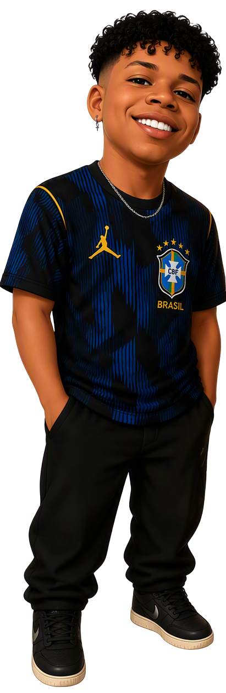
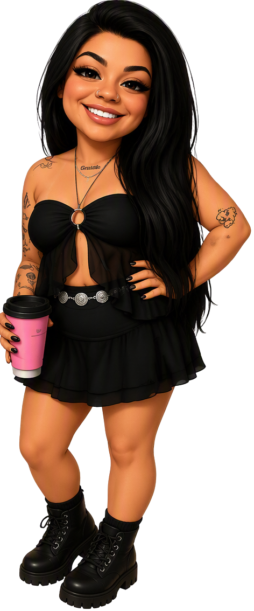
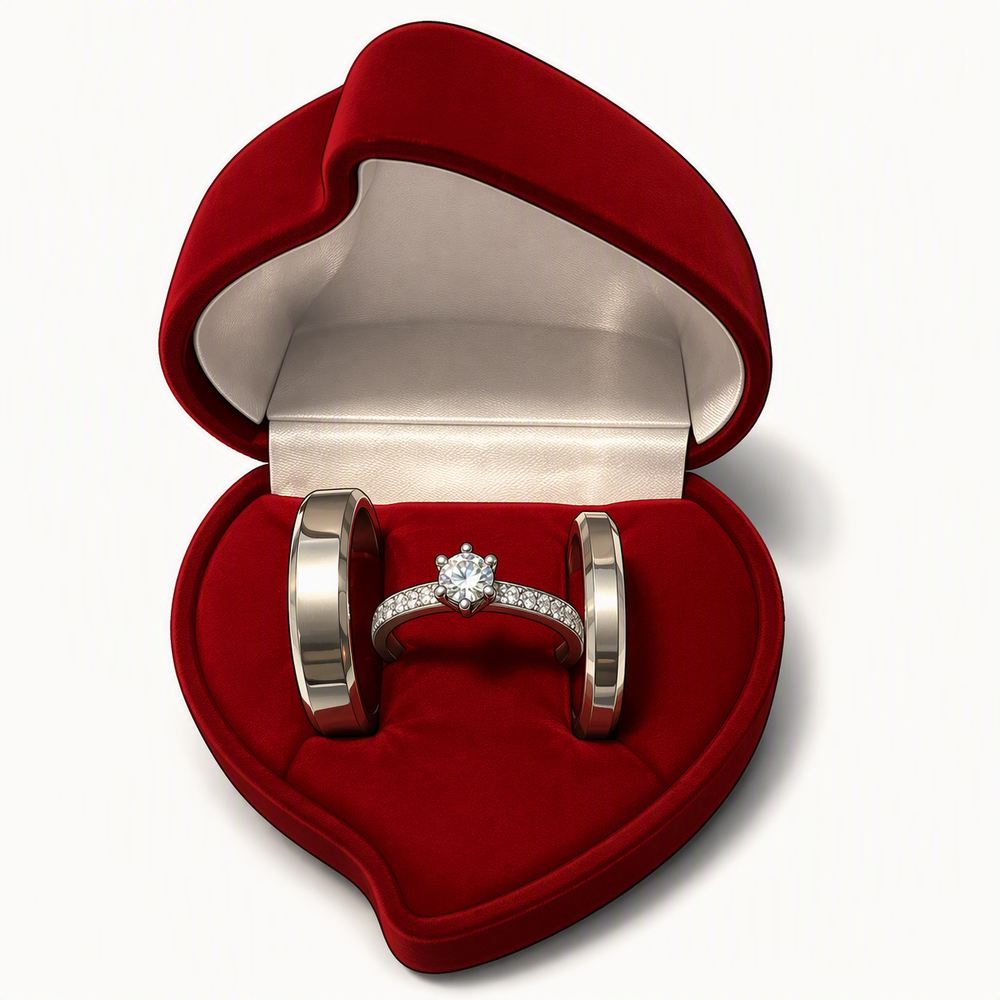

Kaizen - Para ver o cardápio,
clique aqui 👆
Na verdade, você não vai encontrar o cardápio aqui... 😅
mas sim um pedacinho da sua história.
Quer dizer... da nossa história 💗
Tá pronta para começar? 🥰


Onde tudo começou. Foi ali, em meio a milhares de pessoas, durante uma das tantas Hipnóticas, que o destino resolveu fazer nos esbarrarmos. ✨
De lá para cá, não me lembro de um só dia em que não quisesse falar com você. Entre conversas que atravessavam a madrugada e sorrisos roubados pela tela, nasceu a sensação de que ali cabia o mundo inteiro. 💫
Exatos dois meses depois, nós estávamos juntos no nosso primeiro encontro, observando as ondas do mar pela janela. E, sem a menor cerimônia, distribuindo beijos apaixonados de duas pessoas que finalmente haviam se encontrado uma na outra. 🌊
Entre cachoeiras, natureza e mais cerveja, aconteceu algo ainda mais bonito: o amor encontrou voz. E, naquele cenário perfeito, o "eu te amo" simplesmente transbordou do coração. 🍃

Hoje, na versão paulista do nosso cantinho favorito, entre risadas, amor e sushi Surgiu o pedido mais importante de todos. 🥢💗
Obrigado por cada passo dessa jornada, por cada sorriso, cada beijo e cada memória que construímos juntos.
E isso é só o começo. Te amo! 🥰
Parece que foi ontem que ouvi o seu "sim"...
Mas, ao mesmo tempo, parece que você faz parte da minha vida há muito mais tempo. Nesse primeiro mês eu descobri algo muito especial: a felicidade ficou mais simples. Ela passou a morar nas pequenas coisas, nas nossas conversas antes de dormir, nas mensagens ao longo do dia. Você transformou a minha rotina de uma forma que talvez nem perceba. Os dias ficaram mais leves, as viagens mais esperadas, os finais de semana solitários um pouco mais suportável. E eu sou imensamente grato por poder viver tudo isso com você. ❤️
Feliz 1 mês de namoro, meu amor.